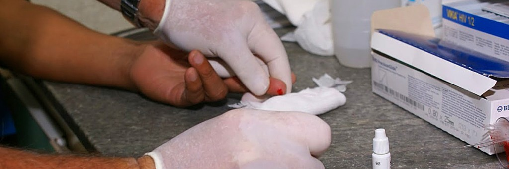

Facultad de Agronomía y Biotecnología

Licenciatura en Ciencias Agrarias
-
Ingeniería en Transporte

Bioingieniería
-
Licenciatura en Petróleo
Facultad de Ciencias de la Salud

Medicina

Licenciatura en Enfermería
- 
Bioquímica

Licenciatura en Kinesiología y Fisiatría